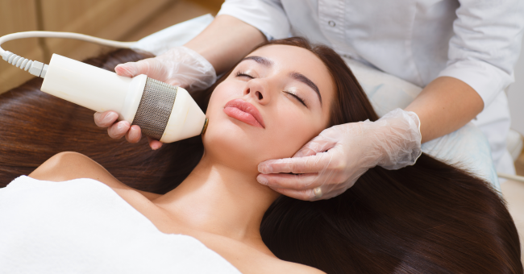
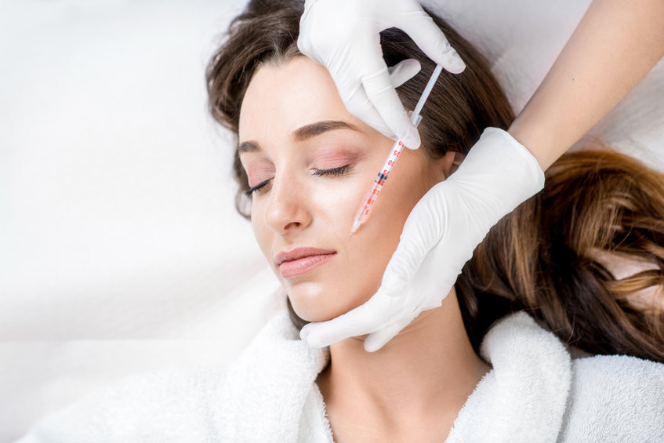

Kosmetologia
|
Aleksandra Nowak Dział dermatologii zajmujący się badaniem, opisywaniem, leczeniem i pielęgnowaniem skóry dotkniętej chorobą lub defektem (alergie, suchość, łojotok, łuszczenie, zmarszczki) oraz włosów, paznokci. Kosmetologia związana jest z higieną życia i odżywiania, metodami farmakologicznymi, fizykoterapeutycznymi i chirurgią plastyczną. Celem tych działań jest zwiększanie za pomocą środków kosmetycznych atrakcyjności fizycznej ciała ludzkiego.
Nazwa dyscypliny wywodzi się od greckich słów kosmetes – sługa toaletowy i kosmetikos – upiększający, a według innych badaczy od greckiego słowa kosmos, które oznacza porządek, ład, ozdobę.
W zakresie interwencyjnym kosmetologia związana jest z higieną życia i odżywiania, a poprawę atrakcyjności fizycznej ciała człowieka osiąga metodami nieinwazyjnymi – kosmetykami, zabiegami pielęgnacyjnymi, interwencjami dietetycznymi, rehabilitacją. Jednak w pierwszym rzędzie służy ona utrzymywaniu, przywracaniu bądź poprawie wyglądu zewnętrznego, a nie utrzymywaniu, przywracaniu czy poprawie funkcji organizmu, jak dzieje się w przypadku rehabilitacji lub dietetyki. Kosmetologia jest również powiązana z metodami farmakologicznymi, fizykoterapeutycznymi, medycyną estetyczną i chirurgią plastyczną.
 Zakres dziedziny Współczesna kosmetologia jest obszerną, interdyscyplinarną dziedziną wiedzy z zakresu ogólnych przedmiotów medycznych, chemicznych i biologicznych. Dotyka zagadnień z obszaru dermatologii i medycyny estetycznej, będąc dyscypliną mocno z nimi związaną. Obejmuje wiedzę z kręgu zarówno podstawowych, jak i klinicznych nauk medycznych (anatomię, histologię i fizjologię komórki, fizjologię, biochemię, chemię ogólną i kosmetyczną, dermatologię, alergologię, chirurgię plastyczną, geriatrię, onkologię, promocję zdrowia, endokrynologię). Oprócz tego w zakres wiedzy kosmetologa wchodzi psychologia, sensoryka i higiena. W kosmetologii stosuje się również te same zabiegi fizykoterapeutyczne i fitoterapeutyczne, co w dermatologii i fizjoterapii. Kosmetolog jest więc zawodem mocno zbliżonym do stricte medycznego.
 Jak zostać kosmetologiem? Aby zostać kosmetologiem, należy przejść przed drogę kształcenia, która różni się od kosmetyczki. W przypadku drugiego z zawodów, wystarczy tylko albo ukończyć odpowiedni kurs, albo dwuletnie studium kosmetyczne. Żeby jednak zostać kosmetologiem, należy ukończyć trzyletnie studia na uczelni wyższej. Niektórzy dodatkowo uzupełniają swoją ścieżkę edukacyjną poprzez dwuletnie studia drugiego stopnia (to jest studia magisterskie).
Kosmetolodzy obecnie mają taki sam zakres uprawnień, jak uprawnienia dyplomowanej kosmetyczki. Kwestia ta jednak jednak sporna i wciąż powraca temat zmiany przepisów w tej kwestii. Bardzo często zdarza się, że obowiązki kosmetologa oraz kosmetyczki dość mocno zacierają się. Wielu klientów jednak znacznie bardziej ufa kosmetologowi – mają przeświadczenie, że jest to osoba, która lepiej zna się na swojej pracy i ma profesjonalne podejście do pracy ze skórą ludzką.
Zarobki kosmetologa i kosmetyczki Zgodnie z danymi powszechnie dostępnymi, mediana płac w przypadku zawodu kosmetologa oraz kosmetyczki wynosi 3100 złotych brutto. Połowa pracowników zarabia więc poniżej tej kwoty, a połowa – powyżej. 23 procent specjalistów każdego miesiąca otrzymuje specjalne premie, a niektórzy mogą liczyć na dodatkowe benefity, w tym między innymi dofinansowanie przez pracodawcę do kursów oraz szkoleń. Jest to bardzo ważne, ponieważ niektóre szkolenia kosztują nawet 5 tysięcy złotych, a zawód kosmetologa i kosmetyczki wymaga nieustannego poszerzania swojej wiedzy o najnowsze techniki i produkty.
|
|||||||||